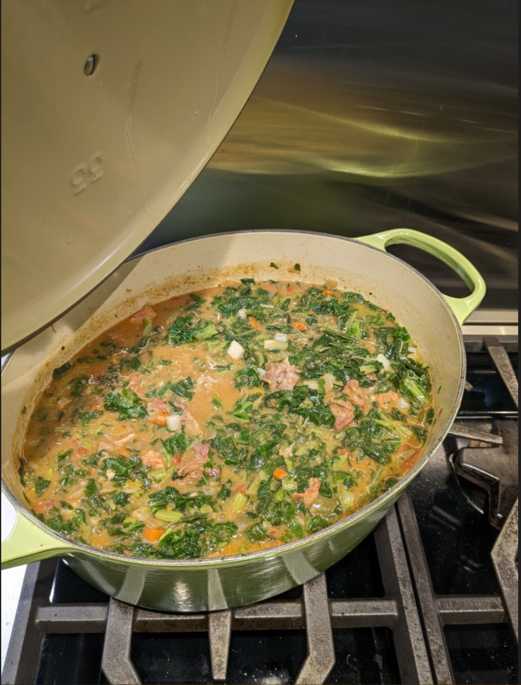

Neck Bones

Ingredients
- 3-4 lbs pork neck bones
- 2 package frozen greens (turnips or collards)
- 1 can Rotel tomatoes
- 3-4 onions
- 3 stalks celery
- 2 carrots
- 3 jalapenos
- 2 bell pepper
- 1-2 tbs garlic
- Pepper, garlic powder, onion powder, Cajun seasoning, Seasoned Salt, to taste
- 4-5 C vegetable stock (with vegetable scraps added)
- 1 tsp salt
- ¼ C apple cider vinegar
- ½ C all-purpose flour
- 2-3 tbs Colman's Dry mustard
- Bacon grease
Directions
- Clean & Soak: Rinse neck bones thoroughly under cold water, drain, and place in a large bowl. Cover with apple cider vinegar and soak 30-45 minutes. Drain and rinse again.
- Season: Spread neck bones on a sheet pan and season with pepper, garlic powder, onion powder, Cajun seasoning, and seasoned salt.
- Brown: Melt 2-3 tbs bacon grease in a large pot over medium-high. Brown neck bones in batches; remove to a colander.
- Cook Vegetables: Add diced vegetables to the pot and cook until softened. Deglaze with vegetable stock or white wine if dry. Stir in Rotel tomatoes about halfway through cooking.
- Build Base: Once most liquid has evaporated and vegetables begin to fry, add the flour‑mustard mixture. Stir well to eliminate raw flour taste.
- Simmer: Add stock, bring to a boil, then return neck bones and any collected juices to the pot. Reduce to a simmer, cover, and cook ~2 hours.
- Uncover: Remove lid and continue cooking, stirring occasionally and scraping the bottom of the pot.
- Finish: Add greens and cook 10-15 minutes more.
- Serve: Serve over rice with French bread and hot sauce.
Chef's Notes
- For more spice, add the ribs and seeds of the jalapenos to the stock
The Gumbo Page
Michael Fritsche
mbf@fritsche.org